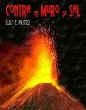

Luis Enrique Prieto Vázquez
Cerceda, Madrid, España.
Médico ginecólogo y sofrólogo, escritor.
dr.luisprieto@gmail.com
directorio@redescritoresespa.com
www.islabahia.com
www.redescritoresespa.com
luisenriqueprieto.github.io
Responsable General de REMES: www.redescritoresespa.com
Director (hasta su cese de publicación en Junio-015) de la Revista Literaria Palabras Diversas: www.palabrasdiversas.com
Miembro correspondiente por España del Círculo de Escritores de Venezuela.
Seleccionado para el Diccionario de Autores Contemporáneos de la Cátedra Miguel Delibes: enlace a la web.
Académico Asociado de la Academia Latinoamericana de Literatura Moderna.
Miembro honorario de la Asociación de Escritores de Mérida, Venezuela: www.escritoresmerida.com
Fundador del Foro Sensibilidades, fundador del Foro Archipiélago.
Tiene una sección fija en la Revista Arena y Cal: arenaYcal
Web "Plumas Selectas" en Isla Bahía: PlumasSelectas
http://www.artefenix.net/luis-e-prieto/
http://fernando-sabido-sanchez.blogspot.com/2011/01/3046-luis-e-prieto.html
http://poetassigloveintiuno.blogspot.com/2011/01/2872-luis-e-prieto.html
http://www.islabahia.com/arenaycal/2011/178_enero/luis_prieto178.asp
http://www.islabahia.com/arenaycal/2010/177_diciembre/luis_prieto177.asp
http://www.antoniomiranda.com.br/iberoamerica/espanha/luis_e_prieto.html
http://medcomunitaria.zoomblog.com/archivo/2006/10/15/la-operacion-Luis-Prieto-Vazquez.html
http://www.poemaspoetas.com/luis-e-prieto-vasquez
http://alenar.wordpress.com/2007/05/18/textos-creativos-de-pilar-moreno-olga-munoz-luis-e-prieto/
https://es.toluna.com/opinions/732982/Luis-E.-Prieto-V%C3%A1zquez
http://www.antoniomiranda.com.br/Iberoamerica/espanha/luis_e_prieto.html
http://elinteriorsecreto.blogspot.com/2010/11/la-mar.html
http://www.artepoetica.net/prieto_vasquez.ht
http://antaria.blogspot.com/2007/04/jugar-con-las-estrellas.html
http://poetapuerto.blogspot.com/2007/12/luis-enrquez-prieto.html
http://www.artepoetica.net/prieto_vasquez1.htm
http://www.valvanera.com/prieto1.htm
http://elescribidor.blogspot.com/search?q=Luis+E.+Prieto
http://grandespoemascontemporaneos.blogspot.com/2009/03/tiempos-luis-e-prieto-espanol.html
http://www.poesiasolidariadelmundo.com/search/label/Luis%20E.%20Prieto-%20Espa%C3%B1a
http://sites.google.com/site/sigloxxiliteraturaypoesia/Home/poesia-y-narrativa-2/luis-e-prieto
http://sites.google.com/site/sigloxxiliteraturaypoesia/Home/poesia-y-narrativa-2/luis-e-prieto-1
http://ccwolf.wordpress.com/2009/06/10/luis-enrique-prieto-poemas-selectos/
http://es.scribd.com/doc/30792275/Botella-del-Naufrago-N%C2%BA-14
http://www.youtube.com/watch?v=gLO6mBawmnk
http://www.islabahia.com/arenaycal/2011/180_marzo/luis_prieto180.asp
http://ateneoblascoibanez.blogspot.com.es/2011/12/luis-e-pietro-narrativa_31.html
http://ateneoblascoibanez.blogspot.com.es/2011/12/luis-e-pietro-narrativa.html
http://ateneoblascoibanez.blogspot.com.es/2011/12/luis-e-pietro-poesia_31.html
http://ateneoblascoibanez.blogspot.com.es/2011/12/luis-e-pietro-poesia.html
http://www.jhbmedia.com/OldOthlo/hletras/poesia/40prieto.htm
http://www.trazegnies.arrakis.es/pagescritores.html (Prieto, Luis E.)
http://latidosdepiedra.blogspot.com.es/2008/02/luis-enrique-prieto-vzquez.html
http://www.quedelibros.com/libro/11990/Aladino-Esta-De-Vacaciones.html
http://ccwolf.wordpress.com/2009/06/10/luis-enrique-prieto-poemas-selectos/
http://lapoesianovende.blogspot.com.es/2013/06/mira-texto-adaptado-de-luis-e-prieto.html
http://poetasconcceres2016.blogspot.com.es/2010/01/luis-e-prieto-vazquez.html
http://sendapoetica.blogspot.com.es/p/blog-page_15.html
http://uncaosorganizado.blogspot.com.es/2012/03/lunes-de-poesia-poema-del-mar.html
http://elclubdelasserendipias.blogspot.com.es/2012/02/pero-cuando-amanece-luis-enrique-prieto.html
http://poemasparaunaciudadaniaglobal.blogspot.com.es/2012/12/los-basurales-sirven-de-lagrimas.html
http://www.revistacronopio.com/?tag=luis-e-prieto
http://mar-palabrasilencio.blogspot.com.es/2013/09/escuchame-mar-luis-e-prieto.html
http://grandespoemascontemporaneos.blogspot.com.es/2009/03/tiempos-luis-e-prieto-espanol.html
http://repoelas.com/participantes/Luis_Enrique_Prieto.htm
https://www.youtube.com/watch?v=loftjadpNgE
http://transitosygeografias.weebly.com/luiacutes-enrique-prieto-vaacutezquez-espantildea.html
http://cmarias.com/elbaulperdido/escuchame-mar-de-luis-e-prieto/
http://www.calleb.cult.cu/index.php/argos/202-obra-literaria-de-luis-e-prieto-vazquez-
http://carmenritayelmar.blogspot.com.es/2013/09/poema-dedicado-la-playa-de-la-barrosa.html
Cantares de la Edad Adulta (poemas), 1975
El hombre, el hombre, el hombre: la tierra, la tierra, la tierra (teatro), 1968
Sensibilidades Primavera-2002 (Autor especial)
Sensibilidades Verano-2002 (Autor especial)
Diario de un Anarquista Atávico (Diario-novela), 2002
Sensibilidades Otoño-2002 (Autor especial)
IV Antología Internacional de Sensibilidades (Autor especial), 2003
V Antología Internacional de Sensibilidades (Autor especial), 2004
Nueve instantes en voz, multimedia, textos leídos, 2004
Antología Internacional Sensibilidades Oro, 2005
La memoria de los triángulos, novela, participación creativa en el personaje Hernán
Todas las voces, una voz (Antología de poetas de Radio Nacional de España)
Aladino está de vacaciones (relatos), 2003
Contra un muro de sal (poesía), 2004
Ditirambos, entre viajes y fantasías (literatura de viajes y relatos), 2005
Equidistancias de Mar y Sierra (poesía), 2007
Participación en la Antología LATIDOS CONTRA LA VIOLENCIA DE GÉNERO, con la prosa poética Guapita de cara, Ediciones Ateneo Blasco Ibáñez, 2012
Mis escritos
Mis últimos libros:

Algunos poemas
He disfrazado de agua
la ceguera
para ver el olor de los sabuesos
que buscan cadáveres proscritos
por los rincones del aire.
Aprendí
del mar
a recorrer
los ocultos ojos de la noche
en pos de las palabras mudas:
renuncio
al sabor
del verano
para que el invierno fecunde
las lágrimas impotentes
de las princesas sumisas.
Solo resta adivinar cómo el oscuro
podrá convertir en azul
el corazón cansado del poeta,
cómo
declinar dolores y fantasías,
cómo hacer estéril
el dolor del tiempo, que pasa
dejando cicatrices en las olas.
Adivinar por qué ya no sirven los disfraces...
Luis E. Prieto
CUANDO EL TIEMPO SE PARA
Se para el tiempo…
Retrocede la luz
amenazando el discurso de las sombras
que han ido a esperar las lluvias
para llorar fracasos.
Hay un circunloquio impreciso
que desbanca la fidelidad de deseo
entre grises dolorosos:
fidelidad
del amor que huye,
soledad
del dolor que hiere,
contrariedad
de la espera muerta.
El tiempo se rompe
entre lágrimas obtusas
ajenas ya a los soles futuros,
inservible ahora a la voz
que enmudece entre heridas sin sangre.
Y cuando el tiempo se para
la canción se torna triste
escondiendo sus dientes en el vacío.
Luis E. Prieto
EL MONSTRUO, A VECES
El monstruo, a veces,
se disfraza de payaso
por carnavales de hambre o miedo
y se va a recorrer auroras
con su sonrisa de revivir las sangres
de los abismos.
Es entonces
cuando se hiela la furia
y los burdeles se tornan grises;
cuando el corazón
de las oropéndolas naufraga
perseguido por odios azules;
cuando el mar
ya no sirve para revestir sonrisas
sino para ahogar tristezas
de dolor y lucha.
El monstruo sin labios
alardea
de canciones sin futuro
para masacrar el aire,
rompe los ojos
de los vagabundos caídos,
burla-rompe-ve
la avaricia de la luz
que se esconde en las alfombras vacías.
El monstruo, a veces…
Luis E. Prieto
NO HAY TREGUA
Para Lola Bertrand, que ya no sufre.
No hay tregua
para el proscrito.
Aunque flameen
de turquesas y marfiles
los altos corredores
donde el silencio aguarda
para besar la muerte;
aunque el hambre de los otros
no invada las cárceles inmunes
por donde el placer aflora
vestido de princesa;
aunque la vida se apague
entre luces de calabaza y neón:
no hay tregua
para vivir
doliendo.
Si acaso
habrá que percutir los labios
hasta que los intestinos revienten de ira
para que la sordidez de la lluvia
ácida no alcance el corazón inútil
de los poderosos murmullos
que bisbisean por entre las caléndulas
agostadas de soledad y frío.
Si acaso habrá
que redistribuir las mareas
antes de que la tregua de los proscritos inicien
su masacre de dolor y lágrimas…
Luis E. Prieto
¿QUÉ HACER?
(para Ana Matilde, Marisa y Araceli)
¿Qué vamos a hacer con los silencios
que se amontonan al costado doloroso
de nuestra oculta biografía?
¿Qué hacer con los dolores contenidos,
con los besos callados y robados,
con las risas mantenidas en reserva,
con los amores que quedaron en secano,
con los gritos que tuvimos que ocultar
para sentirnos partícipes del tiempo?
Habrá que reconfirmar las emociones
en un ejercicio cotidiano de desgarros
y aprender a ventear hasta el límite preciso,
necesario y consecuente, los dolores
que son parte inamovible de la vida;
habrá que ir aprendiendo a retomar palabras
aunque nos duelan los conceptos y las dudas
de ser excepciones que se engullen los lamentos;
habrá que abrir las alforjas solitarias
para sentirnos parte indivisible de un futuro
que convertimos en hueco de silencios apagados.
Y entonces, abiertos los dolores y las sangres,
libres las sonrisas y esperanzas,
caminar codo con codo, piel con ojos,
como un batallón de locos aguerridos
que buscan unirse a la familia destrozada
de egregios sabedores del único camino
que aún nos va quedando...
ahora que sabemos
que ser felices es solo un ejercicio
de lágrimas y risas.
IN THE UPPER ROOM
(EN EL RECINTO DE LO ALTO)
Mahalia Jackson falleció un día cualquiera de 1972,
cantando, mientras se desangraba su pueblo negro.
Para ella este espiritual que es suyo.
https://www.youtube.com/watch?v=OLZcoDsPUkI
(escuchar la voz de Mahalia mientras se siente el poema)
Escucha, hermano: está brotando sangre negra
como un río desbordado
que va enfangando las riveras
del sillón y de la calma.
Escucha, escucha hermano:
"En el recinto de lo alto
hay un Dios en carne viva
cosido a latigazos
que desparrama su aliento
entre los negros doblados".
¿Comprendes, hermano?
Sí, ya sé,
que hay hombres que se mueren cada día
en el amplio sudario de las manos,
que cada día hay un muerto en carne viva
sobre la espesa cinta del asfalto,
ya sé, hermano blanco, que una lágrima
cuesta hoy una fortuna.
Y sin embargo...
Mahalia, yo sé que sí,
conozco a un hombre que ha cerrado sus ojos
en la voz puntiaguda de tu canto
y ha sudado por las secas tierras
del calor y de los látigos.
Sí, Mahalia, negra, profunda Mahalia:
allá, hasta el amplio recinto de lo alto,
ha subido tu canción acariciada
y ha marcado en Él un latigazo.
Escucha, escucha hermano:
"In the upper room
hay un Dios en carne viva
bañado a salivazos
que desparrama su aliento
entre los negros cansados".
¿Comprendes, hermano blanco...?
Luis E. Prieto
Prosas poéticas
APRESÚRATE
Apresúrate. Aún es tiempo de reconciliar laberintos y dibujar salidas en las que el dolor no sea el único superviviente.
Recuerda que la sed se sacia con aventuras posibles, y que el hambre no siempre encoje el estómago, porque el cerebro se insatisface más tarde.
Cuando se olvidan pasados, pueden renacer futuros, aunque el blanco y el gris siempre te acompañen, y los surcos –los que te nacieron y los que te crearon- serán cada vez más hondos, mucho más hirientes y duros.
Todavía hay azucenas que cosechar y musgos que besar: debajo del verde
-siempre- existen sabores indecibles, coleópteros sin ojos que se ríen de la noche, yeguas desbocadas, águilas inciertas con las alas replegadas y avizorando la aurora.
Apresúrate. Ya van viniendo las tormentas de Otoño y el mar esconderá su brisa para hacerla borrasca.
No digas, después, que los cadáveres no tienen imaginación ni saben abonar las tumbas…
Luis E. Prieto
DÉJAME DECIRTE
(dedicado)
Déjame decirte, ahora que se rebelan las mandrágoras en antifaces de luna, que he guardado en mis alforjas cien mil inviernos con nieves altivas y con silencios de río.
Atesoré violines y bandurrias para el comienzo de los frutales y para el final de las lágrimas; he dibujado lagunas sin agua y cielos bombardeados en negro; exploré las altitudes del dolor y del amor entre sonrisas y lluvias; y fui pescador de sueños en círculo, y de ballenas sin dientes ni ojos...
Déjame decirte cómo se tornan las manos oscuras.
Cómo se arrugan los besos.
Cómo se escapa la vida a borbotones de miedos y luces.
Cómo retumban las horas en el balcón del futuro.
Fui roca y martillo, guadaña y cebo, espada y reclamo: supe de todas las miserias ocultas, y descubrí casi todas las magias perdidas.
Me hice sabio de risas y hurón de lamentos. Camarada de duelos y capataz de suspiros.
Acuné mi tiempo con corazón de cruzado en un equilibrio deforme de resurrecciones y sangres.
Desbordé los límites impuros de la belleza y del sexo. Sentí la vida y la muerte agazapadas tras las sombras, o tras las primaveras cansadas...
Déjame decirte ahora por qué he dado asueto a la memoria.
Por qué me asustan las madrugadas vacías.
Por qué me duelen las marejadas sin barcos.
Por qué me asolan los contrafuegos del tiempo.
Déjame decírtelo, amiga, antes de que los alacranes sin nombre hagan sus hogueras y se auto-inflamen en vértigos y ausencias...
Luis E. Prieto
EL CÓNDOR DEL ALBA
Está en el tobogán donde los recuerdos se hacen figuras de sal y agua, cerca del dolor de sentir cicatrices cercanas perforando el miedo, a un paso del derrumbe, confabulando angustias que le llenan de un pánico antiguo, y tan atávico como las voces que murmuran lejanías.
Se ha quedado sin voz.
Quiso cantar a los ponientes de la ira.
Rememorar los idus de los años del júbilo fértil.
Contribuir con sus ojos a las caléndulas del jardín oculto.
Pero se ha quedado sin palabras.
Sin contrafuegos de risas que catapultaran el pánico.
Vacío de luz y sombras.
Vino de la tierra de las profecías y las mañanas resplandecientes, desde donde los lirios de agua se convierten en tucanes de pico amarillo, del otro lado del temor y el odio, fresca de luces acunadas en el regazo de la lujuria y el gozo, del centro mismo del misterio.
Y repartió el canto.
Derramó madrugadas con auroras recientes.
Estuvo en el levante donde se ocultaban los murciélagos.
Luminarias de sorpresas y magias para el renacer de la vida.
Canción de albas nuevas.
Paraíso donde el mar se torna rubio y rosas las olas.
Llenando el corazón perdido.
(Un cóndor, de plumas rojas acariciadas por las nubes, ha querido levantar el vuelo hacia el horizonte difuso, donde, aún, siguen azulando promesas los corsarios sin galeones ni tesoros ocultos.
Y yo lo he visto...)
Luis E. Prieto
GUAPITA DE CARA
Guapita de cara me enseña cicatrices que dejaron las calles en su cuerpo, cuando tenía que andar buscando refugio a sus soledades y hambres.
Ironiza desde más allá del amor y del deseo, provocando mis pasiones con sus labios de tigresa en celo, y refugia sus pestañas detrás de unos dientes encajados por un desprecio de siglos.
No hace el amor sino la guerra, con la mirada perdida y vencida desde el tiempo del alcohol y del caballo, reciclando salivas y recuerdos: inocencias de margaritas olvidadas, latitudes de rosa y amarillo en cumpleaños vagabundos.
Guapita desencaja su sexo en una lucha de fantasmas inservibles que le rondan la boca, y escupe maldiciones que tatuaron sus carnes de princesa sin corona.
Luego recela del sueño y me vigila, acechando el silencio de las sábanas, recorriendo el ruido sin palabras de una voz que siente sospechosa e inquietante, con el puño preparado para el golpe o la defensa.
Tiene sangres acunadas en los labios y soles escondidos en los rincones del miedo y la revancha. Hijos requisados antes del latido y madres abatidas por el corazón del odio en su despensa de vida. Inocencias transgredidas por hermanos que rompieron sus sonrisas. Padres en moratones de lucha y asco. Amores de aguja y muerte.
Guapita de cara se viste, y, con gesto torcido, zarandea mi brazo: “¿dónde está mi parte?”
Se alisa sus cicatrices... y se pierde en la noche.
Luis E. Prieto
TRÍPTICO DE LA EMOCIÓN IMPURA
I-
Has llegado cuando la tarde acariciaba el viento de poniente desde mi ventana de recuerdos.
No había ya murmullos colgados en las bisagras de las puertas, ni caminos abiertos que la duda no hubiera teñido de ocre.
Arco-iris sin lluvia han recubierto, en un instante, el horizonte plano de las risas con un sabor a miel y a hierbabuena fresca.
Cosquillas intrusas han repuntado libres por entre los pliegues cansados de mi piel, anestesiada de esperas.
Olías a besos guardados, a distancias próximas, a caricias saltando desde tus manos a mi cuello en un abrazo perdido y loco.
Y se han abierto todos los cuartos donde se escondían los atardeceres mudos y los silencios sin sonrisas. Nos hemos hecho trasparentes y únicos en la indisoluble posesión del tiempo encontrado: serpentinas de júbilo para calmar el espacio que se nos perdió en el desamor de las lumbres que se quedaron vacías de rescoldos...
II-
Nos fundimos
en la locura violeta de la carne,
en la pasión
de los milagros de lo eterno,
en el vuelo relampagueante de las águilas
remontando nubes en círculos.
Te he dado
mi cuerpo de flor y nata:
he tomado las caricias
de tu sexo púber
hasta saciarme de infinitos colores
al borde del ahogo y la locura.
Manos para prolongar
los labios,
labios para confundir
los ojos,
ojos para retomar la voz
que grita insospechadas promesas.
Tu sexo y el mío
bebiendo amaneceres...
III-
A la noche le ha salido una joroba de pesares.
Has partido, y me has dejado el hueco: la soledad del río en las riberas acariciadas y transeúntes, el reflujo del vómito doliendo vientre abajo, la pena de unas manos que estuvieron a punto de acariciar la luna antes de que las nubes ocultaran su cuerpo radiante.
Espinas en gris y negro laceran mis ojos con acuarelas de verde y barro buscando lágrimas.
Has partido, y me has dejado el vacío que no habla, que duele desde todos los rincones de este silencio absurdo y espeso, máscara de bronce y azufre de aquellas risas que acariciaban los labios de la tarde.
La noche se ha quedado sin palabras, luego del vaticinio rojo de las sábanas húmedas de sexo.
Y mi ventana abierta, sola...
Luis E. Prieto
Algunos relatos
TUVE QUE MATARLA
(para Yeli)
Tuve que matarla. Me había prometido sexo sin límites y sin descanso. Le recordé muchas veces que yo estaba ya llegando a los 60 y que ella apenas rebasaba los 16, porque no quería sufrir desengaños que luego pudieran ser dolorosos. Lolita me sonreía siempre con una mueca de desprecio irónico entre sus grandes dientes. Me convenció que sólo los hombres bien maduros la excitaban hasta llegar al paroxismo. Intenté olvidar sus carnes recientes y frescas, sus muslos turgentes, sus pechos de acechante tersura, su sexo prohibido y jugoso... pero sus gestos provocaban mi libido atardecida cada vez que me acercaba por su casa y la observaba desde detrás de los magnolios del jardín: su lengua juguetona y ofrecida seducía mis deseos de macho, y el descaro de su mímica sin tapujos enardecía mis instintos más dormidos.
Tuve que matarla. No pude soportar el engaño fragrante.
Aquella mañana vi a Lolita copulando, sin ningún recato, con Lolo, el chimpancé africano que acababan de adquirir en el Zoológico.
Ya sé –como le dije al inspector- que no es frecuente enamorarse de una mona, pero juro que mi amor era sincero, y estaba dispuesto a cambiar mi vida por ella.
Me han condenado a 3 años por “delito ecológico”: ni siquiera mi abogado ha entendido que se trató de un “crimen pasional”...
¡Qué mundo más raro!
Luis E. Prieto
EL SIMULADOR
(Para Dani, mi yerno, que no es albañil, para Araceli)
Aquel día Dani estaba especialmente cansado. Llevaba desde las 8 de la mañana en las labores de restauración de aquel palacete dieciochesco convertido, por el albur del dispendio y de la fermosura, en Escuela de múltiples disciplinas contemporáneas, y le apetecía, más que nada, dejar un rato la llana y la paleta y fumarse un cigarrillo tranquilo y a escondidas.
Últimamente la vida no había sido especialmente benévolo con él. A pesar de sus estudios y de sus cursos monográficos solo había conseguido ese trabajo de albañil en aquella restauración cualificada. ¡Menos mal que siempre existía un roto para un descosido! Porque llevaba semanas comiéndose los mocos y paseando sus flamantes títulos de Monitor de Submarinismo Deportivo, de Auxiliar de Vuelo y de Experto en Temas Medioambientales de la UNESCO, por los distintos despachos de aquella ciudad confortable pero con alma elitista y reservada.
Subió la escalera renacentista con el fin de poder ocultarse de las miradas inquisitorias del capataz, y abrió la puerta del último piso, recién reformado, de la Escuela. Estaba a punto de encender el ansiado cigarrillo cuando, aún en la oscuridad, percibió una mole de aspecto extraño que ocupaba las tres cuartas partes de la habitación. No se atrevió a dar la luz pero la llama de su mechero iluminó lo que parecía, a todas luces, la cabina de un avión varada en el piso del recinto y con una puerta trasera abierta de par en par.
Dani se acercó dubitativo a la cabina y tomó un mando a distancia que reposaba a la entrada del compartimento posterior de la cabina, cerca de la entrada. Instintivamente apoyó su dedo índice en el POWER y, como por ensalmo, la cabina se iluminó apareciendo una réplica exacta de la cabina de un bimotor con todo su instrumental encendido, sus mandos de pilotaje y una pantalla gigante al frente del morro del aparato que simulaba la pista de despegue de algún aeropuerto. Antes de que pudiera salir de su asombro las puertas posteriores de la cabina se cerraron automáticamente, y una voz, con leve acento metálico, se dejó oír con claridad en el recinto:
- Bienvenido. Ocupe por favor el puesto del comandante, relájese y esté atento a las instrucciones...
Dani no sabía si salir corriendo o ponerse a llorar, pero, ¡que caramba!, llevaba días machacado con yesos y cementos y ya era hora de echarse una canita al aire... Se sentó en los mandos del avión y notó cómo los motores (o al menos el ruido de los motores del Simulador de Vuelo) comenzaban a rugir. La voz, entonces, comentó:
- Vaya quitando el freno del aparato y ponga rumbo 941 al despegar sin perder de vista a la mosca...
Joder, -pensó Dani para sus adentros-, este tío se cree que soy el Barón Rojo disfrazado de paleta en vacaciones... Pero fue quitando suavemente la palanca del freno y empujando hacia adentro los mandos sin perder de vista a la mosca que marcaba el rumbo y el trazado de la pista de despegue en la pantalla frontal del Simulador. El avión, milagrosamente, comenzaba a deslizarse por la pista mientras el ruido de los motores se exacerbaba.
- Cuidado, -comentó la voz-, mantenga la velocidad de despegue...
Dani sudaba por todos sus poros. Sabía, de sus cursos de Auxiliar de Vuelo, que en un momento dado debería tirar del volante hacia sus piernas para despegar el aparato. La pista comenzaba a acortarse poco a poco. No sabía si la voz le ordenaría hacer la maniobra de despegue, pero cuando comprobó que la ralla continua iba a esfumarse tiró suavemente de los mandos hacia sí. El avión despegó sorpresivamente y la voz comentó al instante:
- Bien, bien... Algo violento, pero despegue correcto. Ponga el rumbo fijado 941 y manténgalo a 2.000 pies en el altímetro. Y no pierda de vista a la mosca...
Estaba encantado. Ahora sí que parecía el verdadero Barón Rojo. Comprobó el rumbo en el reloj y ajustó en el altímetro la altura. . Dani estaba disfrutando como un loco con esa sensación de poder y libertad que hacía tiempo no sentía. Las nubes aparecían en la pantalla, y al fondo, a lo bajo, pequeñas casitas de blanco salpicaban el paisaje verde-gris de la tierra. ¡Demasiado tiempo hacía que no se sentía tan feliz! La tensión continuaba pero ahora la alerta era distinta, apasionada...
De pronto la voz interrumpió su soliloquio:
- Lo siento: parece que las condiciones meteorológicas comienzan a ser adversas. Entramos en una zona de borrasca con abundante aparato eléctrico. Mantenga fijo el rumbo y los mandos. Y no pierda de vista a la mosca...
Ipso facto Dani comprobó que la imagen que tenía delante de sus ojos cambiaba radicalmente. Rayos, truenos y centellas ocupaban ahora toda la pantalla y los mandos empezaban a temblar entre sus manos. Se dio cuenta de que la imagen de la mosca que le marcaba el rumbo y el equilibrio comenzaba a desajustarse peligrosamente de la aguja. Notó como se inclinaba el aparato en relación a la vertical del suelo.
- ¡La mosca, atención a la mosca!, -bramó la voz.
El ruido de los truenos y relámpagos era cada vez más próximo y potente. Dani sudaba intentando mantener el rumbo y la altitud, pero la mosca seguía cada vez más alejada de la aguja y su cabeza empezaba a sentirse en un plano oblicuo con la tierra que de pronto comenzó a girar vertiginosamente.
- ¡La mosca, la mosca..!
La voz no pudo terminar sus instrucciones urgentes. Se escuchó un ruido terrible y todo se tornó quieto y apagado.
A la mañana siguiente Araceli, la encargada de los cursos de pilotaje, subió como de costumbre las escaleras de la Escuela para hacer la revisión habitual de todo el equipamento ya que restaban pocos días para comenzar el curso. Cuando abrió la puerta de la habitación del Simulador de Vuelo, recientemente adquirido, tuvo que apoyarse el marco para no desmayarse: había desaparecido.
Tampoco se volvió a saber, nunca más, de aquel obrero poco cualificado llamado Daniel que llevaba unas semanas trabajando en las restauración del palacete de la Escuela.
La tesis más lógicas que manejó la Policía Científica fue que, aprovechando la noche, unos compinches del albañil desaparecido de alguna manera habían conseguido robar el Simulador de Vuelo y trasladarlo a algún local oculto para luego revenderlo.
Lo que no se explicó el comisario jefe fue por qué encontró una gran mosca muerta flotando en una charca de aceite en el lugar donde debería haber estado el aparato...
Luis E. Prieto
LA FATMA
(En recuerdo a Fátima Mimoum Mohatar
con el cariño más limpio y emocionado posible)
Cuando yo nací la Fatma me miró encogiendo sus ojillos negros y pequeños, y tapándose la boca con la mano, como siempre que se ruborizaba, le dijo a mi madre: este habibi va a ser mi ninio...
No sé si fue desde entonces cuando me empezaron todos a llamar Bibi, que era una españolización cómoda y cortita del epíteto árabe que la Fatma me había puesto ya desde la cuna: Habibi (cariño mío).
Porque yo seguí siendo Bibi para toda la familia, pero sobre todo para la Fatma, mi Fatma, hasta que un día triste, nublado y plomizo de un Agosto ya lejano, me separé de ella en las escalinatas del barco que me trasladaba, con toda la familia, a la Península.
Yo no había visto nunca llorar a la Fatma, pero aquel día lejano, que aún está próximo en mi corazón y en mi recuerdo, la Fatma, llorando como una niña, se agarraba a mi brazo de jovencito de 16 años y me decía:
- No, mi Bibian, no...
Yo intentaba entonces calmarla, aunque tenía bastante claro que posiblemente nunca más volvería a verla, que su edad indefinida, desconocida pero avanzada, no me permitiría más que mantenerla en el recuerdo. Pero la Fatma cada vez se aferraba más a mi entre hipidos que me desgarraban y me dejaban un tremendo nudo en la garganta
- No, tu no, tu no marches a Espania...
Yo la acariciaba con toda la ternura que mis varoniles 16 años me permitían y le decía que la esperaríamos en Madrid al cabo de unos meses cuando ella pudiera arreglar los papeles para el viaje, pero bien sabía yo que la Fatma nunca saldría de Melilla, ni siquiera por su Bibian, porque no sabría qué hacer en una ciudad extraña en la que no podría hablar por las tardes con la Malika, o con su sobrina Raisa, o con su cuñado Abdull.
Porque la Fatma era un poco como la ministra in péctore de Asuntos Sociales de la zona magrebí de Melilla. Su carácter independiente y su inteligencia natural la habían convertido en una pieza clave e imprescindible para la comunidad rifeña de la zona. No había disputa familiar en la que la Fatma no fuera preguntada y oída en una especie de tribunal popular en el que ella ejercía , a pesar de ser analfabeta, como jueza de paz y convivencia.
Y, sí, la Fatma era analfabeta. Aún recuerdo aquellas cartas llenas de encanto y cariño que la Fatma me dictaba, desde el primitivismo puro de su pensamiento, y que yo trasladaba al papel al pie de la letra:
Primo, ¿estás bien? Yo muy bien, gracias a Alá.
Dice la Malika que la funa que tienes en Tánger que la cuides. Que cuando pueda irá a verla.
Raisa se ha colocado en casa con unos señores con posibles que la tratan bien.
Y Abdelkader quiere hablar conmigo para casarse con Raisa.
Yo creo, primo, que Abdelkader puede ser buen marido.
¿Y por allí, todo bien?
Cuando vengas a Melilla no olvides llamarme.
Salam oli kum, primo.
Fuera de su misión como casamentera y jueza de paz, la Fatma tenía un carácter de lo más sui géneris. Ella nunca quiso casarse porque decía que para que un hombre la pegara y la cambiara por otra cuando fuera algo vieja mejor se quedaba como estaba. En casa era toda una institución y nunca permitió que ninguna otra criada se acercara por casa para ofrecer su trabajo. Cuando esto acontecía, de tarde en tarde, la Fatma esperaba a la advenediza a la puerta de casa y le decía:
- ¿Tu sabes que esta casa es mía? ¿Tu sabes que es la casa de mi Bibian? ¿Tu sabes que es la casa de mi familia espaniola? ¡Anda y márchate!
Porque la Fatma no aceptaba, ni siquiera después de alguno de aquellos enfados terribles con mi madre en los que juraba en cherja y luego se auto-despedía por un tiempo, que nadie pudiera ocupar su lugar imprescindible, y durante todos aquellos días montaba guardia cerca de la puerta de la casa, sin entrar, hasta que ella decidía que había llegado el tiempo del perdón y del olvido.
Pero al margen de sus enfados transitorios la Fatma era, sobre todo para mi, el cariño más profundo y puro con el que fui aprendiendo la vida. Con ella aprendí a coger los chumbos con aquel palo de escoba que ella me fabricaba para que mis manos no se lastimaran. Con ella aprendí a pelarlos y a saborearlos. Con ella me fui integrando en las tradiciones rifeñas, y con ella tomaba el té con hierba buena en las tardes en que el viento de levante ponía tontas las sonrisas mientras me contaba las leyendas bereberes que había aprendido de sus mayores.
Por eso cuando se la tuvieron que llevar al hospital con una apendicitis aguda la Fatma solo permitió que fuera yo el que le acompañara antes de la operación. Sus ojos negros y brillantes estaban entonces apagados y su sonrisa parecía solo una mueca por el dolor. Allí, en la habitación, la Fatma me iba susurrando:
- Si yo me muero, mi Bibian, todo lo que tengo es tuyo... Le das a Malika las chilabas y los pañuelos... Y a Abdull le dices que me entierren en Frahana... Pero todo lo demás es para ti...
Yo tenía un nudo en la garganta porque me parecía que la Fatma estaba muy grave, y porque se me antojaba que sus ojos ya estaban empezando a mirar para adentro. Pero le decía:
- Mi Fatma, tu eres fuerte. Tu no eres Alijudi mala raza. Tu eres mi morita berebere...
Y la Fatma me miraba con una sonrisa apagada y dolorosa entre sus labios.
No pudo entonces la peritonitis con ella, y después de un tiempo la Fatma andaba por nuestra casa, como siempre, con sus rituales religiosos y dejando bien apartadas sus manos del JALUFO, del cerdo del cocido o de cualquier alimento que ella no tuviese la certeza de con qué estaba cocinado. Mi madre le decía muchas veces:
- Fatma, prueba estos pasteles que son muy buenos...
Y la Fatma, poniendo cara de sabia despistada, le contestaba:
- No, seniora, a la Fatma no gustar esos pasteles...
Porque a pesar de llevar quince años en casa seguía pensando que podrían llevar algún condimento de jalufo aquellos pasteles que ella no había elaborado.
Y lo decía desde la certeza de que nunca intentaríamos engañarla en sus tradiciones religiosas, pero también desde esa íntima convicción de ser una practicante musulmana dentro de una familia cristiana a la que quería como si fuera la suya propia, a pesar de no haberse atrevido nunca a mirar de frente a mi padre, porque una buena musulmana no debía de mirar nunca a los ojos de un señor mayor y sobre todo con el pelo blanco.
Así era la Fatma: una institución a la que nunca habría podido olvidar.
Pero lo que no pudieron las diferencias étnicas y culturales, sí lo pudieron el tiempo y la distancia.
Cuando pocas semanas después de recibir su última carta escrita por Malika y sospechar una extraña despedida cogí un avión y aterricé en Melilla ya intuía que nunca más iba a volver a ver a mi Fatma. Me dijeron sus amigas que había dejado de trabajar poco después de nuestra partida y que desde hacía unos días nadie había vuelto a saber de ella...
Aunque yo creo que la Fatma sabe, esté donde esté, que yo la tengo bien guardada en un rincón muy especial de mi admiración y mi cariño.
(Nunca pude encontrar en el cementerio de Frahana ninguna tumba con el nombre de mi Fatma para dejarla unas hojas de hierba buena bien verde y olorosa)
Luis E. Prieto
SI DEL CIELO TE CAEN LIMONES...
Marcos no estaba seguro de poder aceptar el encargo a pesar de lo mucho que lo necesitaba. Hacía tiempo que llevaba pensando en la emigración para intentar conseguir una vida más estable y confortable que la que llevaba viviendo en su Cartagena de Indias natal desde hacía treinta años. Pero nunca tuvo nada que ver con la coca, y la sola idea de convertirse en correo de la droga le ponían los pelos de punta. Cierto era que, posiblemente, fuera la única forma de conseguir el dinero suficiente y el visado para poder entrar en España, pero no lo tenía nada claro. El del Café del Puerto le había asegurado que era todo bien limpio y sin problemas, que los bolos iban muy bien protegidos para que no se rompieran dentro del estómago, y que, en cualquier caso, su entrada en Madrid no sería por vía directa desde Cartagena de Indias, ni desde Bogotá, sino que tomaría un avión a Montreal, en Canadá, y desde allí viajaría hasta Madrid para evitar suspicacias de la policía. La recompensa era sustanciosa y el visado asegurado y en toda regla. Al fin y a la postre, -pensó Marcos-, si no lo hacía él otro cualquiera se apuntaría al negocio ya que tenían una lista interminable de posibles correos.
(Si del cielo te caen limones, aprende a hacer limonada...)
El viaje no fue todo lo preciso que pudiera pensarse. El DC-9 de Viasa que hacía el itinerario Caracas-Bogotá-Montreal sufrió un retraso considerable, al parecer por fallos en el tren de aterrizaje, y la salida hacia Montreal se demoró casi doce horas. Las ocho bolas que Marcos había tragado con abundante líquido y un astringente empezaban a pesarle en el estómago. No sabía qué hacer. A punto estuvo de darse la vuelta y tomar un avión hacia Cartagena para terminar la aventura. Incluso uno de los funcionarios de Viasa se había acercado a él, mientras en esto estaba, y le había preguntado:
- ¿Se encuentra bien, señor?
- Sí, no tenga reparo, -dijo Marcos-, es que estoy nervioso con el retraso.
- Pues apúrese, señor, porque parece que ya está todo satisfecho y dentro de breve tiempo embarcarán para Montreal, -comentó.
En el vuelo de Montreal a Madrid, Mario se sintió a morir. Las náuseas se le venían a la boca cada vez con mayor frecuencia e insistencia. A las tres horas de vuelo no tuvo más remedio que levantarse a toda prisa a los lavabos para devolver. Sentía pánico de que entre los vómitos saliesen disparados algunas de las bolas de coca, por lo que no se atrevió a usar la bolsa del asiento. Pero tuvo suerte: solo aparecieron bilis mezcladas con restos de la comida del aeropuerto. Probablemente había sido el miedo, ya que conforme se acercaba a Madrid el miedo se acrecentaba y le retorcía los intestinos.
Y también la suerte estuvo a su lado a la llegada. El policía de emigración estaba de lo más ocupado discutiendo acaloradamente con el de la cabina de al lado sobre un partido de fútbol que aparentemente levantaba pasiones. Cuando le presentó el pasaporte ni siquiera le miró a la cara, una cara pálida, demacrada y asustada. Con rutina el policía, sin levantar la vista, le preguntó:
- ¿De vacaciones?
- Sí, señor, un mesecito, -contestó Marcos sacando fuerzas de flaqueza e intentando disimular unos tremendos retortijones de barriga que en esos momentos le acuciaban.
- ¿Se encuentra bien?, -dijo el policía mientras sellaba el pasaporte de Marcos.
- Regular tan solo, señor agente, -dijo Marcos entrecortado- . He tenido un mal vuelo y no me siento nada bien.
- Pues cuídese, -le dijo el agente mientras le devolvía el pasaporte ya sellado.
- Descuide, señor agente, -contestó Marcos con un hilo de voz mientras salía a toda prisa a buscar un servicio.
Porque nada: los astringentes no habían hecho el efecto deseado y Marcos estaba pasando las de Caín en el lavabo del aeropuerto para expulsar las ocho bolas de coca entre enormes espasmos. Al final, y luego de grandes sudores y esfuerzos, pudo expulsarlas sin que se rompieran y se las agenció para recuperarlas y lavarlas antes de guardárselas en el maletín de mano y pedir un taxi hacia su hotel.
(Si del cielo te caen limones, aprende a hacer limonada...)
- ¿Marcos Bermúdez Iriarte?, -preguntó el contacto antes de extenderle la mano.
- El mismito, -respondió Marcos que ya tenía ganas de largar de una vez las ocho bolas.
- ¿Llevas contigo la mercancía?, -volvió a preguntar el de las gafas oscuras y la cara acanallada.
- Pues faltaría más, -respondió Marcos mientras daba una palmadita al maletín de cuero que le acompañaba.
- Estamos viéndola, -escupió el acompañante del canalla.
Poco después Marcos era conducido en un coche camuflado a la comisaría de Ventas. Los canallas eran en realidad policías del Departamento de Narcóticos, y le habían tendido una trampa perfecta, que, por otro lado, tampoco tenía un especial mérito ya que Marcos estaba deseando deshacerse de la mercancía, y se la hubiera endosado casi al primero que le hubiera dicho esta boca es mía. Después de una semana en el calabozo donde le habían interrogado ya más de una docena de agentes, aquel día, irregularmente, habían ido a buscarle y le habían sentado en un despacho elegantemente amueblado. Al poco entró un hombre que no parecía policía y le saludó con cordialidad:
- ¿Marcos Bermúdez?, -le había preguntado el hombre.
- Para servirle..., -dijo Marcos algo aturdido.
- Bien, vamos al grano, -cortó en seco el hombre del despacho-. Mi nombre es Pato Salvaje y vengo a hacerte una propuesta.
- Usted me manda, señor D. Pato Salvaje, -balbuceó Marcos muy nervios.
- Estoy comisionado para poder librarte de la cárcel a cambio de que colabores con nosotros como agente doble, -dijo directamente y sin fisuras el presunto Pato Salvaje.
- ¡Ay, señor, que yo no sé qué es eso de agente doble..!, -casi lloró Marcos cada vez más confuso y nervioso.
- Tranquilo, Marcos, tranquilo... Yo te lo voy a explicar...
Y le explicó que el CESID (Centro Superior de Investigación de la Defensa) estaba muy interesado en descubrir una trama que había detectado de narcotraficantes peruanos que estaban introduciendo coca purificada entre los soldados profesionales del ejército español. Que necesitan un hombre de confianza, a poder ser de origen latino y nacionalidad americana, para que se pudiera introducir dentro de la organización de los peruanos, que durante su estancia con ellos estaría bien protegido y pagado, y desaparecerían los antecedentes delictivos como correo de la droga... Pato Salvaje hablaba y hablaba convincentemente y sin respiro, y Marcos escuchaba desde otro mundo, sin saber muy bien aún lo que estaba sucediendo. Solo le hubiera gustado preguntarle al agente por qué precisamente él y no otro, pero en ese momento el agente, como adivinando su pregunta, le espetó:
- Además, Marcos, físicamente eres una copia casi exacta de Belisario Baena, el capo del cartel de Cuzco...
- Pues lo que usted mande, señor D. Pato, -dijo Marcos sin saber muy bien lo que decía.
(Si del cielo te caen limones, aprende a hacer limonada...)
Eso de ser agente doble no era del todo malo. Tenía su coche privado, su apartamento y su sueldo que le permitía vivir más que desahogadamente y alternar en las mejores salas de salsa de la capital de España. Y categoría. Sobre todo categoría social y respeto. Estaba a la espera de su primer viaje al Cuzco y todas las mañanas era ilustrado convenientemente por los agentes de La Casa para su misión en el Perú. Habían pasado ya casi tres meses desde que le detuvieron los policías en aquella cita-trampa y, la verdad, no tenía ningún deseo especial de volver para las américas y meterse, como quien dice, en la boca del lobo. A Marcos lo que de verdad le gustaba era vivir confortablemente, pero el contrato era el contrato, y se temía que en breve su vida cómoda y relajada estuviera a punto de concluirse...
Cuando llegó al Cuzco tenía reservada una elegante suite en el Hotel Camino Real por cuenta de La Casa. Luego de dormir un rato se aseó y bajó al hall para darse una vuelta por la ciudad antes de comenzar a establecer los contactos que tenía asignados. Cuando salía por la puerta del hotel dos sicarios, con caras de pocos amigos, se le pusieron a cada lado mientras el más joven le decía con cortesía:
- D. Belisario: andábamos apurados...
Marcos se quedó petrificado, pero antes de responder el más joven añadió:
- Nos habían informado que los de Lima habían acabado con usted, D. Belisario...
Marcos decidió seguir andando como si nada, comprendiendo en seguida el equívoco y asumiendo su nueva identidad ante la posibilidad de que fuera bastante peor descubrirse y no seguir el juego. Por otro lado parecía que, como señaló Pato Salvaje, su parecido con el capo del Cuzco era tan extraordinario que ni siquiera sus guardaespaldas se habían percatado.
- Pues ya veis que no, -dijo Marcos sacando la voz más dura que encontró en su garganta-. Solamente estuve visitando a una chulita...
Los sicarios le seguían bebiendo su sombra, y Marcos tuvo que pensar deprisa para que la situación no se le escapase de las manos.
- Id a por el auto y llevadme a la casa, -se le ocurrió decir a Marcos antes de estar a punto de desmayarse de miedo.
Sorpresivamente los dos matones se volvieron a sus órdenes y Marcos quedó perplejo en la Plaza de Armas sin saber para dónde correr. Pero no tuvo mucho tiempo para pensar y decidir ya que en pocos minutos apareció una ranchera conducida por uno de los sicarios para recogerle. Marcos subió y el todo-terreno se perdió por las callejas antiguas que salían de la Plaza.
(Si del cielo te caen limones, aprende a hacer limonada...)
Habían pasado más de seis meses cuando Marcos-Belisario recibió, en su confortable casa a las afueras de Cuzco desde donde regía con mano firme el cartel de Cuzco, una nota que unos de sus enlaces en Lima le había entregado. Leyó su contenido con una mezcla de miedo y de sorpresa:
“Pato Salvaje en Lima camino del Cuzco. La Casa sorprendida y preocupada. Espero explicaciones convincentes y no tener contratiempos. Pato Salvaje adorará a los dioses en el Machu Pichu el 26 a las 10. El sol nace siempre en solitario”.
A las 10 de la mañana en las alturas del Machu Pichu el sol ya quemaba como una bola de fuego. Había aún pocos turistas porque el tren de cremallera que subía desde el Cuzco no tenía su llegada hasta las 11. Marcos divisó desde su limusina a Pato Salvaje, aparentemente solo, apoyado en una ruinas incas casi en el centro de la ciudad arqueológica.
- Hola, señor D. Pato, -saludó Marcos cuando estuvo cerca del agente sin olvidar su antigua relación de dependencia.
- Hola, Marcos... ¿o debo decir señor D. Belisario?, -contestó Pato Salvaje cargando las palabras.
- Como usted guste, mi amigo, -respondió Marcos con tranquilidad.
- ¿Se puede saber a qué anda jugando?, -preguntó a bocajarro el agente.
- Pues qué quiere que le diga, D. Pato. ¿Recuerda una canción salsera que decía: si del cielo te caen limones, aprende a hacer limonada..?
Pato Salvaje puso cara de asombro.
- ¿No la recuerda?, -continuó Marcos-. ¿Y esa otra que decía: si naciste pa martillo del cielo te caen los clavos..?
El agente estaba anonadado.
- Pues eso, señor D. Pato, -siguió Marcos imperturbable-. Mire, yo solo quería tener una vida digna y un trabajo honrado en su país, pero, mire usted, la salsa me ha perseguido y no he tenido más remedio que adaptarme. Me han caído clavos y limones, me he convertido en martillo y he aprendido a hacer limonada, antes de que los limones me agriaran el estómago y los clavos me traspasaran el corazón. Así de simple, D. Pato...
El agente seguía con la boca abierta y sin capacidad de responder.
- Y ahora, D. Pato, olvídese de mi. Veremos si soy capaz de clavar bien los clavos y de digerir la limonada...
Marcos extendió la mano a Pato Salvaje que no pudo reaccionar y se la dejó colgada. Luego, dándose la vuelta, se subió a la limusina y se perdió por la carretera de polvos áridos mientras los turistas llegaban en tropel desde la estación.
Luis E. Prieto
LAS MARGARITAS SILVESTRES DE AMALFI
Abdull Alí Satur Alh Menabí no pudo dormir con tranquilidad aquella noche, y todas las huríes del firmamento estuvieron bailando una danza sinuosa entre su estómago y su cerebro.
La Perla del Desierto había zarpado al despertar la madrugada de Tindaz, en el Golfo de Akaba, con sus 120 tripulantes bien uniformados y a punto, y todo el séquito correctamente alojado en sus numerosos camarotes, con dirección a Nápoles, donde Abdull, emir de Qatubi, había decidido pasar unas vacaciones de unos meses para visitar al Dr. di Lorenzzo, prestigioso especialista italiano en cirugía andrológica.
Hamed Beuz Mohamed, primo del emir, y Ministro del Interior de Qatubi, recibió, pocas horas antes, la notificación del Perfecto de Nápoles, de que habían finalizado las obras del Muelle de Oriente del puerto de la ciudad, después de dos semanas de trabajos urgentes para ampliarlo 15 metros y poder dar cabida al lujoso yate del emir. Se dirigió a la suite real, y luego de identificarse por inter-video, y de esperar que el emir tuviera tiempo de ocultar convenientemente a su última concubina, Raisa, una jovencita de 20 años, le fue comunicado que podía adentrarse en los aposentos del emir.
- Salam, -saludó el ministro-. Me comunican, alteza, que el muelle de Nápoles esta dispuesto. Los 300.000 dólares que otorgamos al Municipio para su ampliación han dado sus frutos...
- ¿Encargaste las flores?
- Sí, alteza. El helicóptero real ha partido para Jaifa y estamos a la espera de su regreso al helipuerto del barco.
- ¿Y los tulipanes?
- Está previsto que durante la travesía un nuevo viaje del helicóptero los recoja en Ámsterdam y los retorne al yate.
- Ya sabes, primo, que no me gustan estos retrasos...
- Han sido inevitables, emir...
- No hay nada inevitable cuando se pagan 6.000 dólares diarios para tener flores frescas cada día. Que no vuelva a pasar , o tendré que replantearme tu cargo...
- Sí, Abdull, será como tú dices.
- En cuanto lleguen las flores da órdenes de colocarlas en todos los aposentos de mi séquito. Y no olvides poner rosas rojas en el camarote de Raisa, y blancas y amarillas en los de Malika y Fátima. En mi baño, tulipanes...
- Salam, alteza. Tus deseos serán cumplidos...
Hamed abandonó la estancia real con rabia contenida. Sus largos años en Londres le habían dejado un poso de inconformismo social que ahora, al servicio de su primo, se le hacía muy cuesta arriba reprimir. Había intentado hablar con Abdull en más de una ocasión, pero el emir siempre hizo oídos sordos a sus consejos. Y no, no es que deseara convertir el emirato en un modelo de democracia caduca y occidentalizada, pero insistía en, al menos, guardar las formas de cara a la galería internacional, y sobre todo de cara a la prensa internacional, tan sensible siempre con los países del Golfo y sus cacareados “desmadres económicos y sociales”. Hamed pensaba que gastarse diariamente 6.000 dólares en flores, -y para más escarnio compradas a los anemigos de Alá, en las tierras del norte de Israel-, cuando muchos ciudadanos de Qatubi subsistían en el umbral de la miseria, no era, precisamente, una buena propaganda para el país, y, desde luego, para el emirato. Pero Abdull siempre zanjaba la polémica con un “es voluntad de Alá”, que no daba para más discusiones posibles.
El Movimiento Qatubí para la Regeneración Moral, un gropúsculo con escasos adictos y que sus servicios secretos creían estar financiado por parte de la numerosa familia del emir, algunos posiblemente bien colocados en altos cargos del Estado, había lanzado unos pasquines en la capital poco antes del viaje del emir a Nápoles para su tratamiento andrológico. Los panfletos, que enseguida fueron retirados por sus hombres, rezaban:
“¿Alá es partidario de que se malgasten los recursos del pueblo en viajes del Jefe del Estado de dudosas razones religiosas?
¿Aprueba el Corán que el cuerpo que Alá ha concedido sea trasformado artificialmente para el placer?
¿Es justo que se derrochen las arcas del Estado en lujos superfluos y en médicos innecesarios?”
Evidentemente las octavillas llevaban veneno y habían sido confeccionadas desde posiciones próximas a la familia real, dado que no se habían hecho públicas las verdaderas razones del viaje del emir a Nápoles. Aún así el emir seguía sin desear analizar las razones, y sólo ordenó la caza y captura de los terroristas revolucionarios, y que fuesen sometidos, una vez convictos, a un castigo ejemplar. Pero Hamed nunca podría confesar a su primo que tenía más que sospechas de que al menos tres de sus esposas, y dos de sus hermanos, estaban financiando el Movimiento y las protestas.
La sirena del yate sonó con fuerza anunciando el puerto de Nápoles. La travesía había sido con bonanza, aunque el emir volvió a fracasar con la joven Raisa, que no consiguió, a pesar de sus esfuerzos, que la hombría de Abdull cumpliera los mínimos requisitos para el juego amoroso. Ni siquiera las cuatro viagras con ginseng del Dr. Mustafá Alkiri habían valido más que para un insoportable dolor de cabeza con fuertes punzadas en las sienes. Las huríes bailaron, de nuevo, en sus narices, una danza imposible de velos siniestros y negros.
El yate atracaba en el flamante nuevo pantalán del puerto de Nápoles, sufragado por el emir, cuando Abdull se disponía a entrar en su jacuzzi para darse un baño relajante antes del desayuno. Notó que la puerta de su suite se abría lentamente, y por ella apareció una niña de pelo muy rubio y extraños ojos negros. Aparentaba unos 12 a 13 años, llevaba entre sus manos un ramo de margaritas, y sonreía. El emir estuvo a punto de pulsar la alarma por miedo a que, escondida en el ramo, la niña pudiera llevar una bomba enviada por alguno de sus enemigos del emirato, pero la sonrisa franca de la niña le detuvo..
- Y tú, ¿quién eres?
- Yo soy María... y te traigo un regalo...
- ¿Un regalo a mi, al emir de Qatubi?
- Sí.
- ¿No será ese ramo de flores tu regalo?
- Sí.
- ¿No sabes que yo me gasto todos los días más de 6.000 dólares en las mejores flores del mundo?
- Eso me han contado, pero estas son margaritas silvestres de la costa de Amalfi... Y son mágicas...
- ¿Ah, sí? ¿Y cuáles son sus magias?
- Si las hueles intensamente, pensando en un deseo, este se cumplirá de inmediato.
- No me digas...
- Sí, es cierto, pero hay que tener cuidado: sólo una inspiración intensa, sólo una; con cada inspiración el efecto se multiplica proporcionalmente.
- ¡Tonterías! Y, por cierto, ¿cómo diablos has entrado en mi camarote...?
Abdull se dio la vuelta para acercarse al timbre de emergencia y llamar a la guardia de seguridad, pero cuando estos irrumpieron en su aposento la niña había desaparecido como por ensalmo, y sólo permanecía el ramo de margaritas silvestres encima de la mesita de té de delante del sofá de seda india.
Dio orden de que buscaran y encarcelaran al jefe de su guardia de seguridad, y dispuso a su ayudante para que desembarcara la limusina y fueran a recoger al Dr. di Lorenzzo al Hospedale dil Giotto para una primera consulta en el yate después del desayuno.
El incidente con la niña le había dejado un poco soliviantado, pero no estaba dispuesto a que nada importunase el objetivo fundamental de su viaje a Nápoles. Cierto que allí estaban las margaritas silvestres de María, pero era estúpido pensar que aquellas pobres flores silvestres tuvieran propiedades mágicas. Aunque, ¿qué perdía por seguir el juego, antes de darse su masaje de agua a presión? Tomó el ramo, pensó en su pene lánguido, y deseó que creciera y creciera, cada vez más duro, mientras aspiraba con fuerza, una y otra vez, un olor amargo y ácido que despedían las flores.
¡Tonterías!, -se dijo, mientras se introducía en su bañera de chorros de agua-, pero no bien tumbado entre los surtidores comprobó, boquiabierto, cómo su miembro se endurecía y crecía como hacía años no recordaba. Estuvo a punto de dar un grito de placer y júbilo, pero se contuvo pensando que podría tratarse de un efecto óptico o transitorio. No, parecía que la niña tenía razón con las propiedades mágicas de las margaritas silvestres de Amalfi, se dijo, mientras se observaba de nuevo en los espejos de las paredes del baño. Y allí seguía el ramo, en la mesita de té de la antesala. Se acercó cuidadosamente a él, con una mezcla de miedo reverencial y deseo, y aspiró profundamente mientras pensaba: “más, mucho más, el más grande y más potente de todos los siervos de Alá...”
El Dr. di Lorenzzo apenas pudo hacer más que diagnosticar un “priapismo” iatrogénico de causa desconocida cuando llegó a la Perla del Desierto, y ordenar su ingreso urgente en la UCI del Hospedale dil Giotto. Las constantes vitales del emir estaban totalmente alteradas, con una hipertensión realmente mórbida, y unas cifras de saturación de oxígeno y carbónico tan patológicas que hicieron necesarias intubación inmediata y sedación profunda, a pesar de la cual no fue posible dominar la rigidez del miembro viril del emir, que seguía enhiesto como el palo mayor de una goleta de cinco velas.
Cuarenta y ocho horas estuvo Abdull en la UCI del hospital antes de que un fracaso renal agudo terminara con su vida, aunque no con su priapismo intratable que nunca pudo reducirse , a pesar de la sedación intensa y del óbito. En sus últimos minutos, Hamed, Raisa, Malika y Fátima rodeaban el cuerpo agonizante del emir y hacían cábalas de cómo dar la noticia al pueblo de Qatubi, preparar el sepelio, y designar al nuevo Jefe de Estado del emirato.
Poco después de su muerte, y del traslado incógnito desde el hospital a la Perla del Desierto, en un féretro especial, adaptado a los 30 centímetros de verga abanderada, Hamed ya había pactado con las tres esposas presentes que, durante su mandato, serían consideradas princesas herederas, y que las margaritas silvestres de Amalfi sustituirían, durante su primes mes de gobierno, a las flores importadas de Jaifa y de Ámsterdam en los jarrones de la mayoría del séquito familiar del fallecido emir de Qatubi, Abdull Alí Satur Alh Manabí.
Y los 6.000 dólares diarios en flores importadas, -sentenció Hamed Bezuz Mohamed, próximo emir del reino, por la gloria de Alá-, serían invertidas en adquirir nuevos y más sofisticados sistemas de seguridad para evitar atentados que pudieran desestabilizar la armonía consensuada del emirato de Qatubi...
Notas:
- Existe, en la actualidad, un emir del Golfo Pérsico que gasta diariamente 6.000 dólares en flores, que viaja en un yate de 150 metros de eslora y con más de 120 tripulantes, y que donó 300.000 dólares para hacer un pantalán adecuado para su yate en el puerto de Nápoles.
- El “priapismo” (de Príapo, dios griego) es un síntoma que puede aparecer en algunas lesiones medulares de la “cola de caballo” sacra, y que se caracteriza por una erección continuada y muy dolorosa del pene.
- No sé si las margaritas silvestres de Amalfi tienen propiedades mágicas, pero puedo asegurar que son hermosísimas y tienen un olor misterioso...
Amalfi, Italia
Luis E. Prieto
LA LUNA DEL RAJASTÁN
Habíamos subido en Delhi Cantonment, la antigua estación de la capital.
Olía a sándalo y a ese sabor pegajoso de humedad calurosa que se percibe en la India según llegas de Occidente y que ya nunca te abandonará, junto con el picante de los “bhiris” y el abrasivo curry, durante toda tu estancia en el Subcontinente.
“Cada vagón, un principado”, rezaba la propaganda del Palace on Wheels (Palacio sobre Ruedas), para describir el fabuloso tren, compuesto por catorce vagones de ensueño, en el que nos disponíamos a realizar un viaje por las tierras íntimas del Rajastán durante una semana. Y a fe que no mentía la información que cayó en nuestras manos ojeando una revista de viajes meses atrás: nuestro vagón, que llevaba el nombre de Adaipur en recuerdo de uno de los príncipes de la antigua India, era un muestrario reconstruido y moderno de las exquisitas tradiciones y refinamientos de los maharajás de la época, con unos compartimentos con dos soberanas camas, mesillas de noche con flores frescas y olorosas siempre, un armario en rica madera tallada y con incrustaciones de madreperlas, y alfombras y terciopelos lujosos decorando suelos y paredes, junto con cuarto de baño de lo más moderno y sofisticado. Refinamientos que se completaban, en cada vagón, con un saloncito privado para tomar el té de la tarde o desayunar, o para una cena íntima al margen de los cuatro exclusivos restaurantes repartidos por todo el convoy.
Sultán Sagapuri, con su burka encarnado, sus pantalones de un blanco reluciente y su turbante de las tierras de Gujerat, en un granate jaspeado, y uniforme de todo el staff del hotel moviente, nos había dado la bienvenida al vagón minutos antes de que aquel palacio sobre ruedas comenzara a deslizarse por entre los suburbios de Nueva Delhi, mientras la noche descendía incipiente dejando sombras fugaces en la mínima iluminación de unas calles llenas de figuras silentes y con olor a hambre.
Inmaculado, juntando las manos a la altura de la barbilla conforme a la tradición hindú, y con una graciosa reverencia, nos dijo: “Sultán siempre a su servicio. Las 24 horas del día y todos los días de la semana. ¿Los señores desean un té, un refresco o un whisky a las 3 de la madrugada? No problemas. Tocar el botón (y nos señaló un refinado pulsador dorado a la derecha de la cabecera de la cama) y Sultán estar aquí a sus órdenes. Bienvenidos a nuestra casa que es la vuestra”.
Porque en aquel palacio moviente nada parecía reñido con cuentos de hadas y príncipes: maharajás de tiempos remotos con nardos en las mesillas y lamparitas de bronce alumbrando las sábanas de hilo bordadas y colchas con motivos tribales que se derramaban sobre una moqueta roja sin la más mínima mancha o desgaste. La noche mecía nuestros sueños con el traqueteo bamboleante y tibio de un mundo de fábulas con lunas crecientes hasta la siguiente parada turística en Jaipur, o en Jaisalmer, o en Bharapur, o en el Santuario jainista de Politana…
Al tercer día habíamos declinado, a la llegada a Adaipur, un recorrido en barca por el Lago Pichola debido a una indisposición gástrica producida, probablemente, por un pollo con curry “a la occidental”, que nos había obligado a echar llamaradas de fuego por todas las cavidades de nuestra anatomía, y decidimos quedarnos en el tren, saboreando, desde las ventanas de nuestro compartimento, el ajetreo continuo de gentes que poblaban la estación y que con-vivían entre los raíles con absoluta normalidad ante nuestro asombro.
En un momento mi mirada quedó fija en un personaje altivo, pero curiosamente humilde, con barba descuidada y vestido a la usanza de los campesinos de Adaipur, con un turbante crema zigzagueando su cabeza, y una especie de chal a cuadros sobre sus hombros. Portaba una raída cartera de piel de camello y se calzaba con unas babuchas gastadas y sucias. Su porte era elegante y esbelto, y un largo y canoso bigote adornaba su cetrino rostro, marcando surcos de gala por debajo de unos ojos vivos y expectantes. Llevaba tiempo observando el convoy, y había ido acercándose, poco a poco, hacia nuestro vagón al que recorría con la mirada fija y profunda. En un momento sus ojos se enfrentaron con los míos que desde la ventana de mi habitación les observaban con curiosidad. Me hizo un gesto reverencial, y, acercándose a la ventanilla, que abrí de par en par, me susurró:
- Sahib, ¿podría pedirle la gracia de poder visitar su vagón?
Me pilló desprevenido la petición, sobre todo viniendo de un hombre de aspecto humilde, pero con un léxico en inglés de lo más correcto y educado, por lo que intuí que algún enigma podría ocultarse detrás de tan insólito ruego.
Estuvo recorriendo el vagón, -con la escolta imprescindible de Sultán, que, a pesar de su asombro, nada dijo-, en un silencio sepulcral, con los ojos atónitos y una sonrisa triste entre sus labios. Pasaba sus manos, suavemente, por los tapices, olfateaba con delicadeza los muebles, acariciaba las lámparas art dèco, se acercaba felino a las vajillas de porcelana y a los manteles bordados… Un silencio espectral y agudo nos fue acompañando por cada una de las esquinas del recorrido. Cuando sintió que ya lo había palpado todo, pidió permiso para sentarse en el saloncito de té:
- Gracias, sahib, -dijo-. Soy Baguani Gulabrai, biznieto del último maharajá de Adaipur, y necesitaba saber si todavía seguía vivo el fantasma de mi bisabuelo entre los rincones de este vagón que aún creo recordar…
Juntó sus manos a la altura de los labios y cerró los ojos indicando que no deseaba seguir hablando, sumiéndose en un trance semi-místico en el que permaneció durante bastantes minutos, aferrado a su inseparable cartera.
Convencí a nuestro fiel Sultán para que le permitiera acompañarnos durante el resto del recorrido como tributo a su rango perdido, y éste accedió con gesto algo contrariado, pero complaciente. Al caer la tarde Baguani desaparecía como por ensalmo, para volver a aparecer, hierático e inamovible, cada mañana al pie de la escalerilla poco antes del comienzo de la excursión del día. Nos saludaba inclinando su delgado cuerpo, sin decir palabra, y nos escoltaba por las distintas ciudades que visitábamos, siempre solícito y pendiente de todo, a unos cinco pasos detrás de nosotros, persiguiendo nuestras sombras, o atendiendo que el elefante de Jaipur fuera el más limpio y reluciente de todos, o comprobando con minucia el richshaw de Jaisalber antes de que tomáramos asiento, o apartando a los niños-mendigos de las ruinas de Chittogard.
Sólo una noche, poco antes de que el tren comenzara su marcha en dirección a Bharapur, y mientras tomábamos unos aperitivos antes de cenar en nuestro salón privado de té, pudimos ver al biznieto del Maharajá asomarse a la puerta del recinto, esta vez sin su famosa cartera, y con el rostro transido de asombros:
- Mira, sahib, -nos dijo, mientras señalaba con su mano agrietada una luna llenísima, cubierta de nubes brumosas y sucias.
- La luna.., -le comenté, luego de recrearme en una visión casi sobrenatural y misteriosa.
- No, sabih, ya no es la luna de Rajastán, el aire la ha vuelto negra.
Iba a preguntarle por qué ya no era la luna de Rajastán, pero Baguani había desaparecido en silencio dejando la pregunta en suspenso.
Desde aquella noche, antes de echar los visillos de seda de mi compartimento, observaba la luna, siempre rodeada de nubes brumosas y sucias, y me preguntaba: ¿qué le pasa a la luna del Rajastán?
Cuando llegamos de vuelta, luego de siete maravillosos días recorriendo el corazón de la India, a la Estación de Delhi, Sultán nos besó las manos y nos obsequió con unos collares de buganvillas que dejó prendidos de nuestros cuellos con una sonrisa infinita.
Estaba a punto de preguntarle qué sabía de Baguani cuando lo divisé en el andén, destacando con su figura de bambú por encima del gentío que ya poblaba la estación: siks cargando equipajes y mozos que se ofrecían por 10 rupias a llevarte a los hoteles más importantes de la ciudad.
Nos hizo una reverencia, y en su rostro divisé una mueca herida que atribuí a un sentimiento de tristeza por la despedida inminente. En esta ocasión Baguani comenzó a caminar, contra su costumbre, por delante nuestra, apartando al gentío para que nada nos importunase hasta la puerta de la estación. De pronto un sonido brutal resonó como un trueno con ecos de bomba. La gente se tiró al suelo asustada y se oyeron gritos confusos. Cuando volví la mirada a las vías comprobé, aterrado, cómo el vagón Adaipur, que hacía escasos minutos habíamos abandonado, volaba por los aires dejando una columna de humo grisáceo y turbio que ascendía hacia el cielo, ocultando una luna decreciente entre nubes de polvo y azufre.
En un instante recordé la cartera de nuestro amigo Baguani.
- ¡Baguani!, -grité, intentando reencontrar la figura del biznieto del Maharajá de Adaipur.
Pero Baguani corría ya hacia la salida levantando los brazos al cielo y exclamando a gritos:
- ¡La luna, sahib, la luna!
(No hubo muertos ni heridos, sólo un vagón de tren pulverizado por una bomba casera que nunca se supo quién pudo colocarla ni porqué.
¿Qué le pasa a la luna del Rajastán?)
Luis E. Prieto
*Nota: si algún término no es suficientemente conocido por el lector, el autor tendrá mucho gusto en explicárselo y comentárselo.
Fotos


{kind=link}
{kind=link}
{kind=link}
{kind=link}
{kind=link}
{kind=link}
{kind=link}
{kind=link}
{kind=link}
{kind=link}
{kind=link}
{kind=link}
{kind=link}
{kind=link}
{kind=link}
{kind=link}
{kind=link}
{kind=link}
{kind=link}
{kind=link}
{kind=link}
{kind=link}
{kind=link}
{kind=link}
{kind=link}
{kind=link}
{kind=link}
{kind=link}
{kind=link}
{kind=link}
{kind=link}
{kind=link}
{kind=link}
{kind=link}
{kind=link}
{kind=link}
{kind=link}
{kind=link}
{kind=link}
{kind=link}
{kind=link}
{kind=link}
{kind=link}
{kind=link}
{kind=link}
{kind=link}
{kind=link}
{kind=link}
{kind=link}
{kind=link}
{kind=link}
{kind=link}
{kind=link}
{kind=link}
{kind=link}
{kind=link}
{kind=link}
{kind=link}
{kind=link}
{kind=link}
{kind=link}
{kind=link}
{kind=link}
{kind=link}
{kind=link}
{kind=link}
{kind=link}
{kind=link}
{kind=link}
{kind=link}
{kind=link}
{kind=link}
{kind=link}
{kind=link}
{kind=link}
{kind=link}
{kind=link}
{kind=link}
{kind=link}
{kind=link}
{kind=link}
{kind=link}
{kind=link}
{kind=link}
{kind=link}
{kind=link}
{kind=link}
{kind=link}
{kind=link}
{kind=link}
{kind=link}
{kind=link}
{kind=link}
{kind=link}
{kind=link}
{kind=link}
{kind=link}
{kind=link}
{kind=link}
{kind=link}
{kind=link}
{kind=link}
{kind=link}
{kind=link}
{kind=link}
{kind=link}
{kind=link}
{kind=link}
{kind=link}
{kind=link}
{kind=link}
{kind=link}
{kind=link}
{kind=link}
{kind=link}
{kind=link}
{kind=link}
{kind=link}
{kind=link}
{kind=link}
{kind=link}
{kind=link}
{kind=link}
{kind=link}
{kind=link}
{kind=link}
{kind=link}
{kind=link}
{kind=link}
{kind=link}
{kind=link}
{kind=link}
{kind=link}
{kind=link}
{kind=link}
{kind=link}
{kind=link}
{kind=link}
{kind=link}
{kind=link}
{kind=link}
{kind=link}
{kind=link}
{kind=link}
{kind=link}
{kind=link}
{kind=link}
{kind=link}
{kind=link}
{kind=link}
{kind=link}
{kind=link}
{kind=link}
{kind=link}
{kind=link}
{kind=link}
{kind=link}
{kind=link}
{kind=link}
{kind=link}
{kind=link}
{kind=link}
{kind=link}
{kind=link}
{kind=link}
{kind=link}
{kind=link}
{kind=link}
{kind=link}
{kind=link}
{kind=link}
{kind=link}
{kind=link}
{kind=link}
{kind=link}
Profesional
Dr. Luis Enrique Prieto Vázquez, Melilla 1947, consulta privada en Madrid (España), de gineco-obstetricia, patología de mama, ecografía ginecológica, colposcopia, cirugía ginecológica y de mama.
Licenciado y Doctor en Medicina y Cirugía por la Universidad Complutense de Madrid (España) en 1972.
Especialista en Ginecología y Obstetricia en el Hospital de Sta. Cristina, Madrid, en 1975.
Especialista en Ginecología Sicosomática. Miembro de la SEGO (Sociedad Española de Ginecología y Obstetricia)
Sofrólogo por la Escuela Española de Sofrología.
Durante 5 años miembro de la PPFF (Planificación Familiar) de España.
Durante 8 años miembro del Equipo Ginecológico de la Maternidad del Hospital Militar Gómez Ulla.
Durante 5 años plaza de obstetricia en Ambulatorio Avda. de Portugal.
Desde hace 40 años en ejercicio privado en Madrid.
Trabajó durante 8 años, hasta Junio 2015, como ginecólogo en un Centro de Especialidades de la Seguridad Social de Madrid.
Ginecólogo de la Clínica CEMEI, de Valdemorillo (Madrid).
Ginecólogo de la Clínica Carpetana, Madrid, hasta Mayo-017
Consulta gratuita de ginecología en la Red: